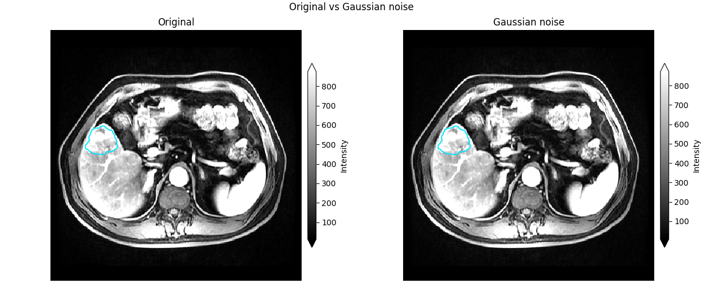
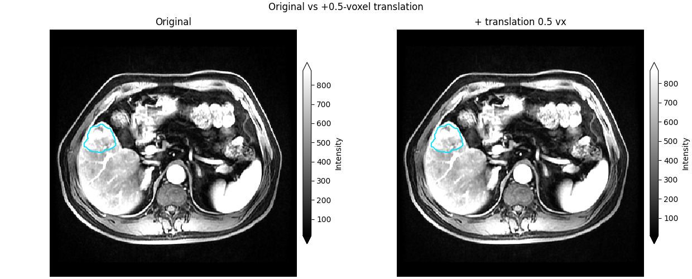
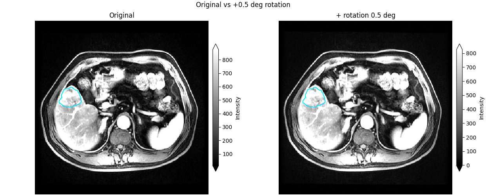
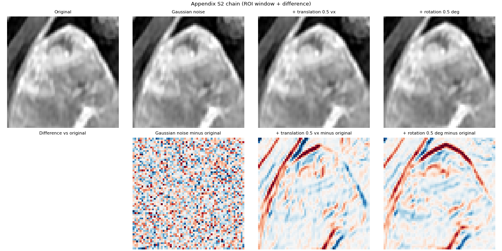
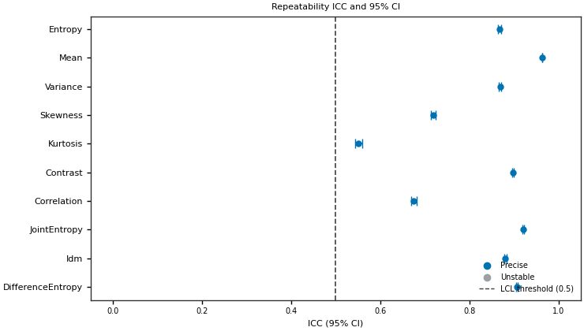
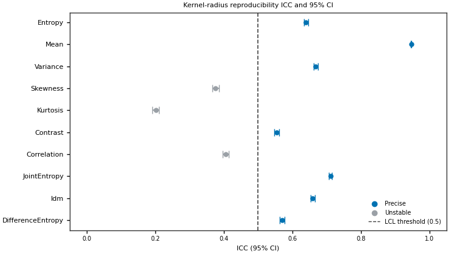
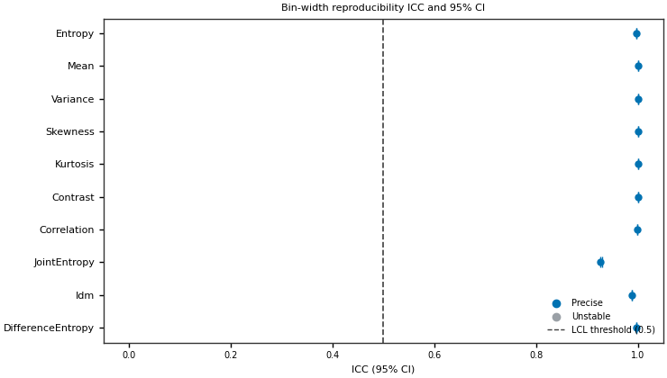
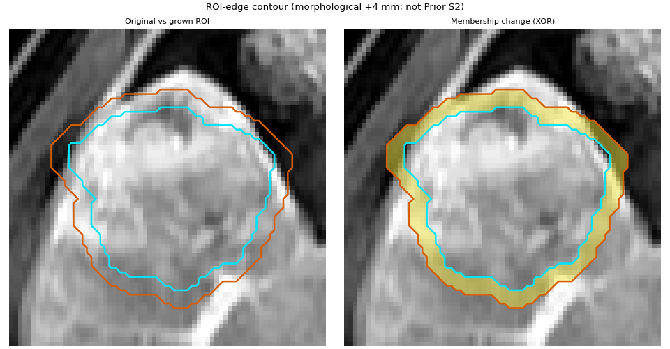
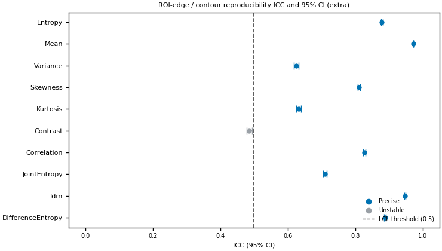

Note
Go to the end to download the full example code.
Precise voxel features
Goal: decide which voxel features are allowed to define habitats, then cluster only those features. This is not a new clustering algorithm. It is the precision screen of Prior et al. (Radiol Artif Intell 2024;6(2):e230118; DOI), taught as the same combinatorial experiments the paper ran.
A voxel radiomic map \(F(\mathbf{x})\) is a local morphological descriptor: each voxel’s value is computed in a neighbourhood whose size is the kernel radius (and, for many features, a grey-level bin width). If that map does not survive a simulated re-acquisition, or a change of neighbourhood scale, clustering it produces partitions nobody can reproduce.
The paper’s combinations are two atoms, then a small composition. Appendix S2 simulated retest is Gaussian (Chang) noise, then 0.5-voxel translation, then 0.5° in-plane rotation. The three ICC experiments are:
repeatability — ICC(3A,1) between the base-setting maps of the original image and of one Appendix S2 perturbed copy (absolute agreement);
reproducibility_kernel_radius — ICC(3C,1) between maps at the given kernel radii (the paper contrasts R1 with R3) at fixed bin width (consistency);
reproducibility_bin_width — ICC(3C,1) between maps at the given bin widths (the paper contrasts B12 with B25 HU) at fixed radius (consistency).
A feature is precise when the lower confidence limit of its ICC
reaches lcl_threshold (default 0.5) in every experiment that
was actually run (the intersection).
identify_precise_features() is that intersection;
aggregate_panels() takes the cohort median when you
have more than one subject.
Three morphological facts are easy to miss if one treats ICC as a generic correlation:
The features themselves are morphological. Kernel radius is a neighbourhood scale. The kernel-radius experiment asks whether the spatial pattern of a feature survives a change in that scale.
Acquisition perturbation moves anatomy. Translation and rotation are rigid morphological changes of the patient in the scanner. Noise is not morphology, but it is part of the paper’s simulated retest.
Agreement is computed on the common ROI. Condition fields are aligned on shared ROI coordinates; any voxel that is NaN in any condition is dropped. The pairing is the intersection of the morphologies, not a rectangular crop filled with dummy intensities.
Passing the screen means the map is repeatable / reproducible under the
stated perturbations, not that it encodes a cell type, a driver
mutation, or a clinical outcome. Screening on the same cohort that will
be clustered is still a discovery analysis. Auto-selection of \(k\)
remains a modelling choice. Absent experiments (single radius, single
bin width) are skipped, not failed — read precise.to_frame() before
claiming “all three experiments”.
This page also runs an extra ROI-edge / contour experiment (mask-only
morphological grow). That is inter-rater contour uncertainty, not
Prior Appendix S2 image retest. It is not folded into the Precise
intersection; the whitelist stays the paper’s three ICC experiments.
The extra panel is shown so the reader can compare the two definitions.
Load one demo subject. Do not hand-crop the Subject:
extract_voxel_texture crops to the ROI bounding box plus kernel
padding internally (crop_to_roi=True by default).
from pathlib import Path
from typing import Dict, Tuple
import matplotlib.pyplot as plt
import numpy as np
from matplotlib.lines import Line2D
from matplotlib.patches import Patch
from habit.contracts import Cohort, cohort_from_directory
from habit.datasets import fetch_demo
from habit.precision import (
ImagePerturbationRegistry,
aggregate_panels,
identify_precise_features,
perturb_image,
precision_panel,
)
from habit.recipes import Study
from habit.spec import HabitatSpec, Spec
from habit.voxel_features import extract_voxel_texture
from habit.viz import plot_habitat_label_compare, plot_intensity_slice, plot_precision_icc
from habit.viz.labels import sanitize_label
from habit.viz import use_style
DATA = fetch_demo()
MODALITIES = ("LAP",)
ROI = "LAP"
cohort = cohort_from_directory(DATA, modalities=MODALITIES, roi=ROI)[:1]
subject = cohort[0]
image = subject.image(MODALITIES[0])
mask = subject.mask(ROI)
print(f"Grid shape: {image.data.shape}")
HABIT demo data (cached)
DATA (preprocessed root): C:\Users\dongm\.habit_data\demo-data-v1\preprocessed
On-disk inventory of this folder:
subjects (5): subj001, subj002, subj003, subj004, subj005
image series: LAP, PVP, delay_3min, pre_contrast
mask keys: LAP, PVP, delay_3min, pre_contrast
example image: images/subj001/delay_3min/WATER__BH_Ax_LAVA_Flex_3min_Series0012.nrrd
example mask: masks/subj001/delay_3min/WATER__BH_Ax_LAVA_Flex_10min_Series0017_mask.nrrd
Your own data must use the same folder tree (change IDs / series names):
DATA/
images/<subject_id>/<modality>/<one image file>
masks/<subject_id>/<roi>/<one mask file>
Then load it with the same call the demos use:
cohort = cohort_from_directory(DATA, modalities=("LAP",), roi="LAP")
Swap DATA / modalities / roi to match your tree. Mask key is often the
same as one image series (here LAP).
Grid shape: (200, 360, 360)
Appendix S2 retest chain — three sequential perturb_image()
atoms on the same rng (noise → translation → rotation).
retest_rng = np.random.default_rng(7)
noisy = perturb_image(image, method="gaussian_noise", rng=retest_rng)
shifted = perturb_image(
noisy,
method="translation",
shift_fraction=0.5,
rng=retest_rng,
)
perturbed = perturb_image(
shifted,
method="rotation",
angle_degrees=0.5,
rng=retest_rng,
)
print("Appendix S2 chain: gaussian_noise -> translation -> rotation")
print(f" grid unchanged: {perturbed.data.shape == image.data.shape}")
Path("out").mkdir(exist_ok=True)
def _show_fig(fig: object) -> None:
"""Save is already done by the caller; always ``show`` so sphinx-gallery
scrapes the figure. ``HABIT_NO_VIEW`` only skips interactive windows
(napari). Matplotlib Agg + gallery intercept ``show()``, so no GUI.
"""
fig # keep the figure referenced for scrapers that walk locals
plt.show()
# Official pair plots: original vs each sequential atom. Full FOV; ROI contour.
for after, title, fname, right_label in (
(noisy, "Original vs Gaussian noise", "precise_features_perturb_noise.png", "Gaussian noise"),
(
shifted,
"Original vs +0.5-voxel translation",
"precise_features_perturb_translation.png",
"+ translation 0.5 vx",
),
(
perturbed,
"Original vs +0.5 deg rotation",
"precise_features_perturb_rotation.png",
"+ rotation 0.5 deg",
),
):
fig_step = plot_intensity_slice(
after,
before=image,
roi_mask=mask,
roi_contour=True,
title=title,
before_label="Original",
image_label=right_label,
)
fig_step.savefig(f"out/{fname}", dpi=150, bbox_inches="tight")
_show_fig(fig_step)



Appendix S2 chain: gaussian_noise -> translation -> rotation
grid unchanged: True
F:\work\habit_project\habit\viz\intensity.py:588: UserWarning: Display geometry conflict: image/anatomy direction does not match mask/label direction. Using the mask/label direction so coronal/sagittal superior-up follows the labelled anatomy. Pass direction= to override.
resolved_direction, resolved_spacing = resolve_display_geometry(
Four-panel mosaic plus a signed difference (after minus original). The analysis volumes stay full-grid; the display window is the ROI bbox so a 0.5-voxel / 0.5 deg change is visible (whole-FOV greyscale looks unchanged).
mask_arr = np.asarray(mask.data)
counts = np.sum(mask_arr > 0, axis=(1, 2))
slice_index = (
int(np.argmax(counts)) if int(np.max(counts)) > 0 else int(mask_arr.shape[0] // 2)
)
nz = np.argwhere(mask_arr > 0)
lo_idx = np.maximum(nz.min(axis=0) - 8, 0)
hi_idx = np.minimum(nz.max(axis=0) + 9, mask_arr.shape)
row_sl = slice(int(lo_idx[1]), int(hi_idx[1]))
col_sl = slice(int(lo_idx[2]), int(hi_idx[2]))
panels = (
("Original", np.asarray(image.data)),
("Gaussian noise", np.asarray(noisy.data)),
("+ translation 0.5 vx", np.asarray(shifted.data)),
("+ rotation 0.5 deg", np.asarray(perturbed.data)),
)
orig_vol = np.asarray(image.data)
orig_sl = np.take(orig_vol, slice_index, axis=0)[row_sl, col_sl]
finite = orig_sl[np.isfinite(orig_sl)]
vmin, vmax = np.percentile(finite, (1.0, 99.0))
with use_style("radiology"):
fig_chain, axes_chain = plt.subplots(
2, 4, figsize=(12.8, 6.4), constrained_layout=True
)
for col, (label, volume) in enumerate(panels):
sl = np.take(volume, slice_index, axis=0)[row_sl, col_sl]
axes_chain[0, col].imshow(
sl, cmap="gray", interpolation="nearest", origin="upper", vmin=vmin, vmax=vmax
)
axes_chain[0, col].set_title(sanitize_label(label))
axes_chain[0, col].axis("off")
if col == 0:
axes_chain[1, col].axis("off")
axes_chain[1, col].set_title(sanitize_label("Difference vs original"))
continue
delta = sl - orig_sl
lim = float(np.nanpercentile(np.abs(delta), 99.0)) or 1.0
axes_chain[1, col].imshow(
delta,
cmap="RdBu_r",
interpolation="nearest",
origin="upper",
vmin=-lim,
vmax=lim,
)
axes_chain[1, col].set_title(sanitize_label(f"{label} minus original"))
axes_chain[1, col].axis("off")
fig_chain.suptitle(
sanitize_label("Appendix S2 chain (ROI window + difference)")
)
fig_chain.savefig("out/precise_features_perturb_methods.png", dpi=150, bbox_inches="tight")
_show_fig(fig_chain)

Extract voxel texture at the paper’s base setting (R3, B12) and the two
reproducibility contrasts (R1 vs R3, B12 vs B25). Then combine panels
with identify_precise_features():
repeatability uses ICC(3A,1) / absolute; kernel-radius and bin-width
use ICC(3C,1) / consistency. Precise = LCL >= 0.5 (default) in
every experiment that was run.
FEATURE_CLASSES: Dict[str, Tuple[str, ...]] = {
"firstorder": ("Entropy", "Mean", "Variance", "Skewness", "Kurtosis"),
"glcm": (
"Contrast",
"Correlation",
"JointEntropy",
"Idm",
"DifferenceEntropy",
),
}
feat_r1 = extract_voxel_texture(
image, mask, kernel_radius=1, bin_width=12, feature_classes=FEATURE_CLASSES
)
feat_r3 = extract_voxel_texture(
image, mask, kernel_radius=3, bin_width=12, feature_classes=FEATURE_CLASSES
)
feat_b25 = extract_voxel_texture(
image, mask, kernel_radius=3, bin_width=25, feature_classes=FEATURE_CLASSES
)
feat_pert = extract_voxel_texture(
perturbed, mask, kernel_radius=3, bin_width=12, feature_classes=FEATURE_CLASSES
)
all_feature_names = list(feat_r3.feature_names)
print(f"Full texture set ({len(all_feature_names)} features): {all_feature_names}")
print("Original texture head:")
print(feat_r3.feature_frame().head())
repeat_panel = precision_panel(
{"original": feat_r3, "perturbed": feat_pert},
agreement="absolute",
)
kernel_panel = precision_panel(
{"R1": feat_r1, "R3": feat_r3},
agreement="consistency",
)
bin_panel = precision_panel(
{"B12": feat_r3, "B25": feat_b25},
agreement="consistency",
)
precise = identify_precise_features(
{
"repeatability": aggregate_panels([repeat_panel]),
"reproducibility_kernel_radius": aggregate_panels([kernel_panel]),
"reproducibility_bin_width": aggregate_panels([bin_panel]),
},
lcl_threshold=0.5,
)
evidence = precise.to_frame().round(3)
kept = list(precise.feature_names)
dropped = [name for name in all_feature_names if name not in set(kept)]
print(f"\nICC screen (LCL >= {precise.lcl_threshold} in every experiment):")
print(f" kept ({len(kept)}): {kept}")
print(f" dropped ({len(dropped)}): {dropped}")
print(evidence.to_string(index=False))
evidence
Full texture set (10 features): ['original_firstorder_Entropy-LAP', 'original_firstorder_Mean-LAP', 'original_firstorder_Variance-LAP', 'original_firstorder_Skewness-LAP', 'original_firstorder_Kurtosis-LAP', 'original_glcm_Contrast-LAP', 'original_glcm_Correlation-LAP', 'original_glcm_JointEntropy-LAP', 'original_glcm_Idm-LAP', 'original_glcm_DifferenceEntropy-LAP']
Original texture head:
original_firstorder_Entropy-LAP ... original_glcm_DifferenceEntropy-LAP
0 4.718153 ... 3.413916
1 4.806128 ... 3.519292
2 4.806799 ... 3.503172
3 4.804531 ... 3.421003
4 4.876184 ... 3.530008
[5 rows x 10 columns]
ICC screen (LCL >= 0.5 in every experiment):
kept (7): ['original_firstorder_Entropy-LAP', 'original_firstorder_Mean-LAP', 'original_firstorder_Variance-LAP', 'original_glcm_Contrast-LAP', 'original_glcm_JointEntropy-LAP', 'original_glcm_Idm-LAP', 'original_glcm_DifferenceEntropy-LAP']
dropped (3): ['original_firstorder_Skewness-LAP', 'original_firstorder_Kurtosis-LAP', 'original_glcm_Correlation-LAP']
experiment feature value lcl ucl n_voxels precise
repeatability original_firstorder_Entropy-LAP 0.868 0.865 0.871 34694.0 True
repeatability original_firstorder_Mean-LAP 0.963 0.963 0.964 34694.0 True
repeatability original_firstorder_Variance-LAP 0.869 0.866 0.871 34694.0 True
repeatability original_firstorder_Skewness-LAP 0.719 0.714 0.724 34694.0 False
repeatability original_firstorder_Kurtosis-LAP 0.551 0.544 0.559 34694.0 False
repeatability original_glcm_Contrast-LAP 0.898 0.896 0.900 34694.0 True
repeatability original_glcm_Correlation-LAP 0.675 0.669 0.681 34694.0 False
repeatability original_glcm_JointEntropy-LAP 0.921 0.919 0.923 34694.0 True
repeatability original_glcm_Idm-LAP 0.881 0.878 0.883 34694.0 True
repeatability original_glcm_DifferenceEntropy-LAP 0.907 0.905 0.909 34694.0 True
reproducibility_kernel_radius original_firstorder_Entropy-LAP 0.640 0.634 0.646 34694.0 True
reproducibility_kernel_radius original_firstorder_Mean-LAP 0.947 0.946 0.948 34694.0 True
reproducibility_kernel_radius original_firstorder_Variance-LAP 0.668 0.662 0.674 34694.0 True
reproducibility_kernel_radius original_firstorder_Skewness-LAP 0.376 0.367 0.385 34694.0 False
reproducibility_kernel_radius original_firstorder_Kurtosis-LAP 0.201 0.191 0.211 34694.0 False
reproducibility_kernel_radius original_glcm_Contrast-LAP 0.554 0.547 0.561 34694.0 True
reproducibility_kernel_radius original_glcm_Correlation-LAP 0.406 0.397 0.415 34694.0 False
reproducibility_kernel_radius original_glcm_JointEntropy-LAP 0.711 0.706 0.716 34694.0 True
reproducibility_kernel_radius original_glcm_Idm-LAP 0.659 0.653 0.665 34694.0 True
reproducibility_kernel_radius original_glcm_DifferenceEntropy-LAP 0.570 0.563 0.578 34694.0 True
reproducibility_bin_width original_firstorder_Entropy-LAP 0.997 0.997 0.997 34694.0 True
reproducibility_bin_width original_firstorder_Mean-LAP 1.000 1.000 1.000 34694.0 True
reproducibility_bin_width original_firstorder_Variance-LAP 1.000 1.000 1.000 34694.0 True
reproducibility_bin_width original_firstorder_Skewness-LAP 1.000 1.000 1.000 34694.0 False
reproducibility_bin_width original_firstorder_Kurtosis-LAP 1.000 1.000 1.000 34694.0 False
reproducibility_bin_width original_glcm_Contrast-LAP 1.000 1.000 1.000 34694.0 True
reproducibility_bin_width original_glcm_Correlation-LAP 0.999 0.999 0.999 34694.0 False
reproducibility_bin_width original_glcm_JointEntropy-LAP 0.927 0.926 0.929 34694.0 True
reproducibility_bin_width original_glcm_Idm-LAP 0.988 0.988 0.988 34694.0 True
reproducibility_bin_width original_glcm_DifferenceEntropy-LAP 0.997 0.997 0.997 34694.0 True
Three ICC forests: a feature is precise only when LCL >= 0.5 in every experiment that was run (repeatability, kernel radius, bin width).
for experiment, fname, title in (
("repeatability", "precise_features_icc_lcl.png", "Repeatability ICC and 95% CI"),
(
"reproducibility_kernel_radius",
"precise_features_icc_kernel.png",
"Kernel-radius reproducibility ICC and 95% CI",
),
(
"reproducibility_bin_width",
"precise_features_icc_bin.png",
"Bin-width reproducibility ICC and 95% CI",
),
):
panel = evidence.loc[evidence["experiment"] == experiment].drop(
columns=["precise"], errors="ignore"
)
fig_icc = plot_precision_icc(
panel.dropna(subset=["value", "lcl", "ucl"]),
lcl_threshold=precise.lcl_threshold,
title=title,
orientation="row",
)
fig_icc.savefig(f"out/{fname}", dpi=150, bbox_inches="tight")
_show_fig(fig_icc)



Publish the artefact, then whitelist it first in
voxel_feature_preprocessors so only precise columns reach scaling
and clustering. Same extractor and \(k\) search: all texture
columns vs the precise subset. Another lab should cluster the same
names (precise.save(...)), not re-screen after seeing the endpoint.
texture_params = {
"imageType": {"Original": {}},
"featureClass": {key: list(values) for key, values in FEATURE_CLASSES.items()},
"setting": {"binWidth": 12.0, "normalize": False},
}
extractor_spec = Spec(
"voxel_radiomics",
{"modalities": list(MODALITIES), "kernel_radius": 3, "params": texture_params},
)
fitter_spec = Spec(
"kmeans",
{"min_habitats": 2, "max_habitats": 3, "validation": "elbow", "n_init": 3},
)
minmax_spec = Spec("minmax", {"across_features": False})
demo = Cohort(subjects=(subject,))
result_all = Study(
HabitatSpec(
name="all_texture_one_step",
voxel_feature_extractor=extractor_spec,
voxel_feature_preprocessors=(minmax_spec,),
habitat_model_fitter=fitter_spec,
habitat_assigner=Spec("nearest_centroid"),
random_seed=11,
pooling="none",
)
).fit_predict(demo)
if kept:
whitelist = precise.preprocessor()
result_precise = Study(
HabitatSpec(
name="precise_one_step",
voxel_feature_extractor=extractor_spec,
voxel_feature_preprocessors=(whitelist.spec, minmax_spec),
habitat_model_fitter=fitter_spec,
habitat_assigner=Spec("nearest_centroid"),
random_seed=11,
pooling="none",
)
).fit_predict(demo)
fig_cmp = plot_habitat_label_compare(
image,
result_all.habitat_maps[0],
result_precise.habitat_maps[0],
titles=("All texture features", "Precise features only"),
align_labels=True,
)
fig_cmp.savefig("out/precise_features_all_vs_precise.png", dpi=150, bbox_inches="tight")
_show_fig(fig_cmp)
print(
f"Habitat maps: all={len(result_all.habitat_maps)} "
f"precise={len(result_precise.habitat_maps)}"
)
else:
print("No feature passed every experiment; skip precise habitats")

Cohort.map[_DefineAndLabelWithinSubject]: 0%| | 0/1 [00:00<?, ?it/s]
Cohort.map[_DefineAndLabelWithinSubject]: 100%|██████████| 1/1 [00:06<00:00, 6.28s/it]
Cohort.map[_DefineAndLabelWithinSubject]: 100%|██████████| 1/1 [00:06<00:00, 6.28s/it]
Cohort.map[_DefineAndLabelWithinSubject]: 0%| | 0/1 [00:00<?, ?it/s]
Cohort.map[_DefineAndLabelWithinSubject]: 100%|██████████| 1/1 [00:06<00:00, 6.21s/it]
Cohort.map[_DefineAndLabelWithinSubject]: 100%|██████████| 1/1 [00:06<00:00, 6.21s/it]
F:\work\habit_project\habit\viz\habitat_core.py:917: UserWarning: Display geometry conflict: image/anatomy direction does not match mask/label direction. Using the mask/label direction so coronal/sagittal superior-up follows the labelled anatomy. Pass direction= to override.
resolved_direction, resolved_spacing = resolve_display_geometry(
Habitat maps: all=1 precise=1
Extra experiment: ROI-edge / contour reproducibility (not Prior Appendix S2).
Appendix S2 above perturbs the image (noise → translation → rotation) and keeps the original mask. This section perturbs the mask and keeps the original image. That is a different scientific object: observer contour / ROI-edge uncertainty, not a simulated re-acquisition.
perturb_image returns only the intensity volume, so mask-only atoms
must be called as a registered component on a Subject. HABIT ships
three built-in contour atoms (no MONAI extra):
morphological— uniform grow / shrink (MIRPperturbation_roi_adapt_size);gradient_weighted— flip more voxels on fuzzy (low-gradient) edges;slice_extent— add or drop whole axial slices at the z ends.
The old tutorial’s optional ROI-follow-up used MONAI
bspline_deform (image and mask share one B-spline / elastic FFD).
That operator still exists as an optional extra, but it is a deformable
re-acquisition, not mask-only contour noise, and it pulls in monai.
This page uses the built-in morphological grow (+4 mm) so the ROI
boundary actually moves and the reader needs no extra dependency.
Texture is extracted on the same image at the base R3/B12 setting,
once with the original mask and once with the grown mask. HABIT voxel
radiomics uses maskedKernel=True, so a larger ROI changes the
neighbourhood of original-edge voxels; the ICC is not a no-op.
Agreement is ICC(3C,1) / consistency: a different ROI definition is a
changing condition, the same flavour as kernel-radius / bin-width, not
Appendix S2 absolute repeatability. Pairing is the intersection of the
two masks (the original core when we grow).
This panel is not passed to identify_precise_features().
Adding it would change the taught Prior three-experiment intersection.
The Precise whitelist above stays those three; the forest below is extra
so the reader can see how mask uncertainty differs from image-noise ICC.
ORIGINAL_ROI_COLOR = "#00E5FF"
GROWN_ROI_COLOR = "#D55E00"
XOR_COLOR = "#F0E442"
# Official registered contour atom on the full-grid Subject (no hand crop).
# extract_voxel_texture still auto-crops (crop_to_roi=True).
contour_op = ImagePerturbationRegistry.create(
"morphological", grow_mm=4.0, roi=ROI, connectivity=1
)
contoured = contour_op(subject, rng=np.random.default_rng(0))
mask_edge = contoured.mask(ROI)
orig_n = int((np.asarray(mask.data) > 0).sum())
edge_n = int((np.asarray(mask_edge.data) > 0).sum())
print(
f"morphological grow +4 mm: ROI voxels {orig_n} -> {edge_n} "
f"(delta={edge_n - orig_n})"
)
if edge_n <= orig_n:
raise RuntimeError(
"ROI-edge grow did not enlarge the mask; the overlay would be a no-op."
)
def _draw_binary_contour(
ax: object,
mask_2d: np.ndarray,
color: str,
*,
linewidth: float = 1.8,
) -> None:
"""Outline a 2-D binary mask on axes that already show anatomy.
Args:
ax: Matplotlib axes.
mask_2d: Slice; values ``> 0`` are inside the ROI.
color: Outline color (ASCII / hex).
linewidth: Contour line width in points.
Returns:
None. Draws in place.
"""
binary = (np.asarray(mask_2d) > 0).astype(np.float64)
if not np.any(binary):
return
ax.contour(
binary,
levels=[0.5],
colors=[color],
linewidths=linewidth,
linestyles="-",
origin="upper",
)
def _fill_binary(
ax: object,
mask_2d: np.ndarray,
color: str,
*,
alpha: float = 0.45,
) -> None:
"""Fill a 2-D binary region (XOR / membership change).
Args:
ax: Matplotlib axes.
mask_2d: Slice; values ``> 0`` are filled.
color: Fill color.
alpha: Face alpha in ``[0, 1]``.
Returns:
None. Draws in place.
"""
binary = (np.asarray(mask_2d) > 0).astype(np.float64)
if not np.any(binary):
return
ax.contourf(
binary,
levels=[0.5, 1.5],
colors=[color],
alpha=float(alpha),
origin="upper",
)
# Display-only ROI window: union of original and grown masks so the new
# edge is visible. Analysis volumes stay full-grid (no Subject crop).
union_mask = (np.asarray(mask.data) > 0) | (np.asarray(mask_edge.data) > 0)
nz_edge = np.argwhere(union_mask)
lo_edge = np.maximum(nz_edge.min(axis=0) - 8, 0)
hi_edge = np.minimum(nz_edge.max(axis=0) + 9, union_mask.shape)
row_edge = slice(int(lo_edge[1]), int(hi_edge[1]))
col_edge = slice(int(lo_edge[2]), int(hi_edge[2]))
orig_sl_edge = np.take(np.asarray(image.data), slice_index, axis=0)[row_edge, col_edge]
mask_o_sl = np.take(np.asarray(mask.data) > 0, slice_index, axis=0)[row_edge, col_edge]
mask_g_sl = np.take(np.asarray(mask_edge.data) > 0, slice_index, axis=0)[
row_edge, col_edge
]
xor_sl = np.logical_xor(mask_o_sl, mask_g_sl)
finite_edge = orig_sl_edge[np.isfinite(orig_sl_edge)]
vmin_edge, vmax_edge = np.percentile(finite_edge, (1.0, 99.0))
with use_style("radiology"):
fig_edge, axes_edge = plt.subplots(
1, 2, figsize=(9.6, 5.0), constrained_layout=True
)
for ax, show_xor, panel_title in (
(axes_edge[0], False, "Original vs grown ROI"),
(axes_edge[1], True, "Membership change (XOR)"),
):
ax.imshow(
orig_sl_edge,
cmap="gray",
interpolation="nearest",
origin="upper",
vmin=vmin_edge,
vmax=vmax_edge,
)
if show_xor:
_fill_binary(ax, xor_sl, XOR_COLOR, alpha=0.50)
_draw_binary_contour(ax, mask_o_sl, ORIGINAL_ROI_COLOR)
_draw_binary_contour(ax, mask_g_sl, GROWN_ROI_COLOR)
ax.set_title(sanitize_label(panel_title))
ax.axis("off")
fig_edge.suptitle(
sanitize_label("ROI-edge contour (morphological +4 mm; not Prior S2)")
)
fig_edge.legend(
handles=[
Line2D([0], [0], color=ORIGINAL_ROI_COLOR, lw=2.0, label="Original ROI"),
Line2D([0], [0], color=GROWN_ROI_COLOR, lw=2.0, label="Grown ROI (+4 mm)"),
Patch(facecolor=XOR_COLOR, edgecolor="none", alpha=0.50, label="XOR"),
],
loc="lower center",
ncol=3,
frameon=False,
bbox_to_anchor=(0.5, -0.04),
)
fig_edge.savefig("out/precise_features_roi_edge_overlay.png", dpi=150, bbox_inches="tight")
_show_fig(fig_edge)
# Same image, perturbed mask, base R3/B12. Extra panel only — not in Precise.
feat_edge = extract_voxel_texture(
image, mask_edge, kernel_radius=3, bin_width=12, feature_classes=FEATURE_CLASSES
)
contour_panel = precision_panel(
{"original_roi": feat_r3, "grown_roi": feat_edge},
agreement="consistency",
)
contour_frame = contour_panel.reset_index().rename(columns={"index": "feature"})
contour_frame["experiment"] = "reproducibility_roi_edge"
print("\nROI-edge / contour ICC (extra; not in the Precise intersection):")
print(contour_frame.round(3).to_string(index=False))
edge_pass = contour_panel.loc[contour_panel["lcl"] >= precise.lcl_threshold].index.tolist()
edge_fail = [name for name in all_feature_names if name not in set(edge_pass)]
print(f" LCL >= {precise.lcl_threshold} under ROI-edge: {edge_pass}")
print(f" LCL < threshold under ROI-edge: {edge_fail}")
print(f" Taught Precise whitelist (Prior three only): {kept}")
fig_edge_icc = plot_precision_icc(
contour_frame.dropna(subset=["value", "lcl", "ucl"]),
lcl_threshold=precise.lcl_threshold,
title="ROI-edge / contour reproducibility ICC and 95% CI (extra)",
orientation="row",
)
fig_edge_icc.savefig("out/precise_features_icc_roi_edge.png", dpi=150, bbox_inches="tight")
_show_fig(fig_edge_icc)
contour_frame.round(3)


morphological grow +4 mm: ROI voxels 34694 -> 59345 (delta=24651)
ROI-edge / contour ICC (extra; not in the Precise intersection):
feature value lcl ucl n_voxels experiment
original_firstorder_Entropy-LAP 0.879 0.877 0.882 34694 reproducibility_roi_edge
original_firstorder_Mean-LAP 0.972 0.972 0.973 34694 reproducibility_roi_edge
original_firstorder_Variance-LAP 0.625 0.619 0.632 34694 reproducibility_roi_edge
original_firstorder_Skewness-LAP 0.812 0.808 0.815 34694 reproducibility_roi_edge
original_firstorder_Kurtosis-LAP 0.632 0.626 0.638 34694 reproducibility_roi_edge
original_glcm_Contrast-LAP 0.485 0.477 0.493 34694 reproducibility_roi_edge
original_glcm_Correlation-LAP 0.828 0.824 0.831 34694 reproducibility_roi_edge
original_glcm_JointEntropy-LAP 0.711 0.705 0.716 34694 reproducibility_roi_edge
original_glcm_Idm-LAP 0.947 0.946 0.949 34694 reproducibility_roi_edge
original_glcm_DifferenceEntropy-LAP 0.888 0.886 0.890 34694 reproducibility_roi_edge
LCL >= 0.5 under ROI-edge: ['original_firstorder_Entropy-LAP', 'original_firstorder_Mean-LAP', 'original_firstorder_Variance-LAP', 'original_firstorder_Skewness-LAP', 'original_firstorder_Kurtosis-LAP', 'original_glcm_Correlation-LAP', 'original_glcm_JointEntropy-LAP', 'original_glcm_Idm-LAP', 'original_glcm_DifferenceEntropy-LAP']
LCL < threshold under ROI-edge: ['original_glcm_Contrast-LAP']
Taught Precise whitelist (Prior three only): ['original_firstorder_Entropy-LAP', 'original_firstorder_Mean-LAP', 'original_firstorder_Variance-LAP', 'original_glcm_Contrast-LAP', 'original_glcm_JointEntropy-LAP', 'original_glcm_Idm-LAP', 'original_glcm_DifferenceEntropy-LAP']
Total running time of the script: (1 minutes 20.323 seconds)